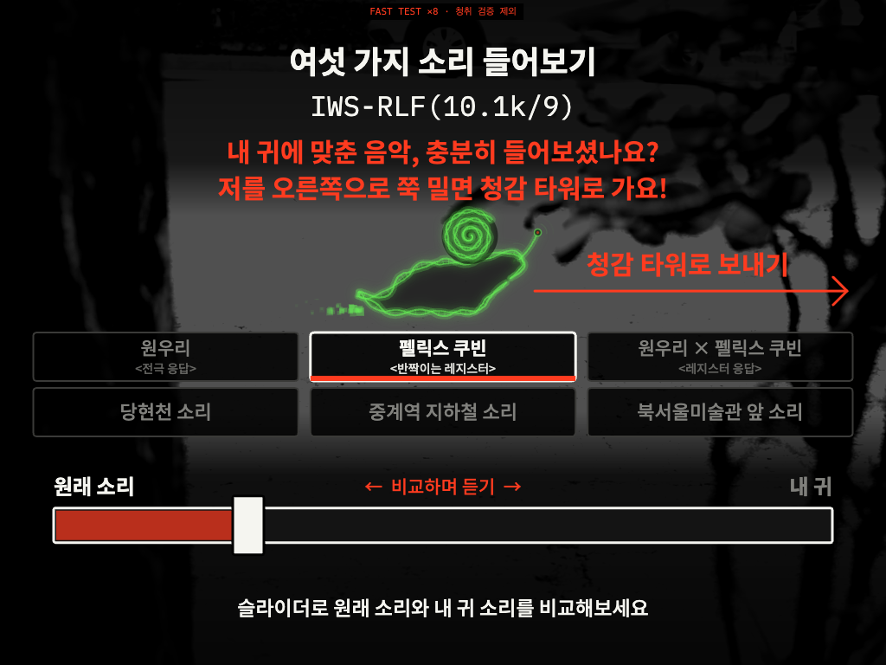
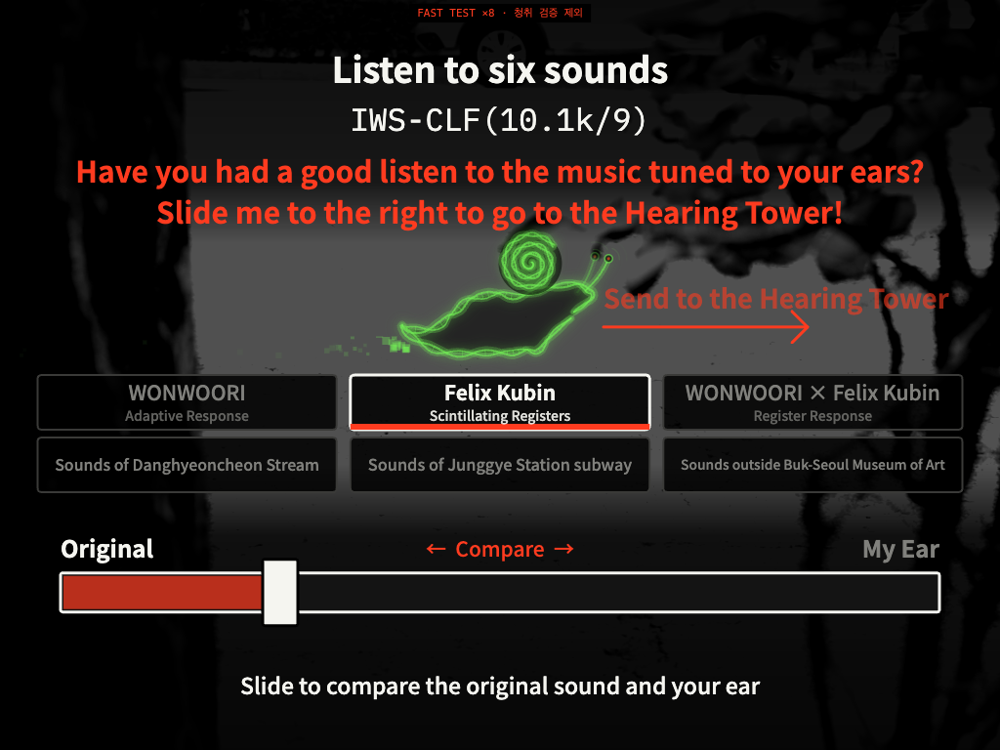
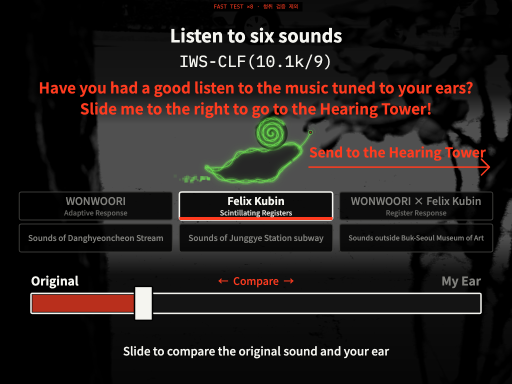
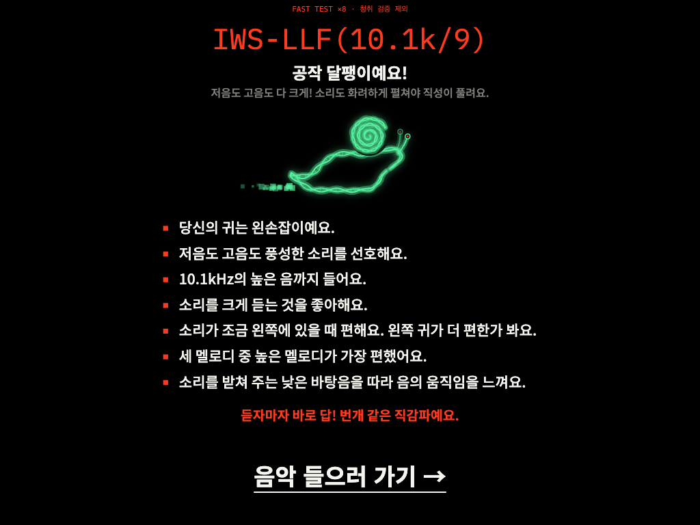

감상 화면 청감타워 안내 업데이트 · 2026-11-22
원우리 작가·차민휘 님 대화 반영. 아이패드 앱 dev 브랜치에 반영했습니다(전시 아이패드용 main에는 아직 올리지 않음).
바뀐 것
| 항목 | 전 | 후 | 누가 정함 |
|---|
| 청감타워 안내가 나오는 때 | 감상 시작 60초 뒤 | 고른 곡을 처음부터 한 번 끝까지 들었을 때. 곡을 바꾸면 그 곡 기준으로 다시 셈. 한 번 뜨면 곡을 바꿔도 남음 | 작가·사용자 |
| 곡을 안 고르고 자동으로 넘어갈 때 | 60초 뒤 | 여섯 곳을 한 바퀴(15초 × 6 = 90초) 돈 뒤 | Claude 초안 |
| 안내 문구 크기 | 23px | 빨간 굵은 30px (영어처럼 두 줄이 되면 25px) | 작가(크게) · 크기는 Claude |
| 화살표 | 달팽이 옆 작은 → | 다 들은 뒤 달팽이 오른쪽에 미니멀한 화살표 + ‘청감 타워로 보내기’(30px): 가는 빨간 선 하나와 열린 화살촉. 0.9초 동안 오른쪽으로 뻗으며 등장하고, 그 뒤 화살촉 쪽이 오른쪽으로 살짝(8px) 까딱임. (점선 ‘———>’은 글자처럼 보이고, 면 화살표·빛 효과는 과해서 사용자 지시로 미니멀하게) 그 전에는 예전처럼 작은 → | 작가(화살표) · 모양은 Claude |
| 음성 안내 | 없음 | 다 들은 순간 한 번 자막만 나옴(m9-8). 녹음이 오면 파일만 넣으면 소리도 나옴. 터치를 막지 않아 바로 밀어 보내도 됨 | 사용자(녹음 전 자막만) |
| 아래쪽 도움말 | ‘달팽이를 오른쪽으로 밀면 청감타워로 가요’ 항상 | 큰 안내가 뜬 뒤에는 같은 말이라 뺌 | Claude |
| 분석 화면 ‘음악 들으러 가기 →’ | 보통 굵기 최대 24px | 굵게 최대 34px, 밑줄 굵게 | 작가 요청 · 크기는 Claude |
차민휘 님 녹음 반영 (2차)
- 청감타워 안내 녹음 m9-8(한 k_10_01, 영 e_10_01)을 넣었습니다. 화면 위 빨간 큰 문구도 같은 문장으로 바꾸고, 전달받은 자리에서 두 줄로 끊었습니다(사용자 선택).
한국어: 내 귀에 맞춘 음악, 충분히 들어보셨나요? / 저를 오른쪽으로 쭉 밀면 청감 타워로 가요!
English: Have you had a good listen to the music tuned to your ears? / Slide me to the right to go to the Hearing Tower!
- 녹음은 다른 안내와 같은 −27 LUFS로 맞췄습니다. 원본은 체크섬과 함께 보관했습니다.
- 청감 코드 한국어 '구'를 새 녹음(k_code_9)으로 바꿨습니다. 예전 '구'는 0.145초로 소리 중간에서 잘려 있었고, 지금은 소리가 잦아드는 끝까지 살려 0.29초에 끝만 살짝 페이드했습니다(사용자 선택). 음량은 다른 발음과 같은 −27 LUFS.
- 안내 위에 같은 문장이 크게 떠 있어, 녹음이 나오는 동안 아래쪽에 자막을 한 번 더 쓰지 않게 했습니다(Claude).
- 주소창이 보이는 낮은 화면(704)에서는 영어 두 줄이 달팽이 껍질에 닿지 않게 큰 문구를 약간 작게(약 27px) 합니다(Claude).
검증
- 한/영 빠른 전체 흐름: 곡이 끝나기 3초 전에는 안내가 뜨지 않고, 끝나면 큰 안내·화살표와 녹음 안내(m9-8)가 실제 녹음으로 나오며, 끝난 뒤에도 안내가 남는지 확인. 통과
- 안내 녹음 한/영 32개씩 길이·음량·피크, 코드 발음 50개 음량·원본 체크섬, 코드 읽기 계획 1,176,120개와 정상 속도 읽기 검사 통과
- 영상·소리 멈춤 복구(stall) 통과
- 아이패드 미니 5 가로(1024×768)와 주소창이 보이는 높이(1024×704)에서 한/영 화면 확인
- 미확인: 실제 아이패드에서 화살표 움직임 느낌. 지금 임시 곡이 16~42초라 안내가 금방 뜨지만, 작가 곡(약 3분)이 오면 그만큼 늦게 뜸
화면
감상 시작 (예전과 같음, 작은 →)

곡을 끝까지 들은 순간: 녹음 안내 + 화살표 (한국어)

자막이 끝난 뒤 (한국어)

곡을 끝까지 들은 순간 (영어)

자막이 끝난 뒤 (영어)

주소창이 보이는 높이 704 (영어, 두 줄이라 25px)

분석 화면 ‘음악 들으러 가기 →’ (한/영)
